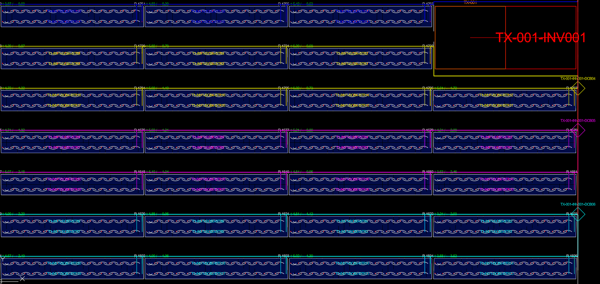
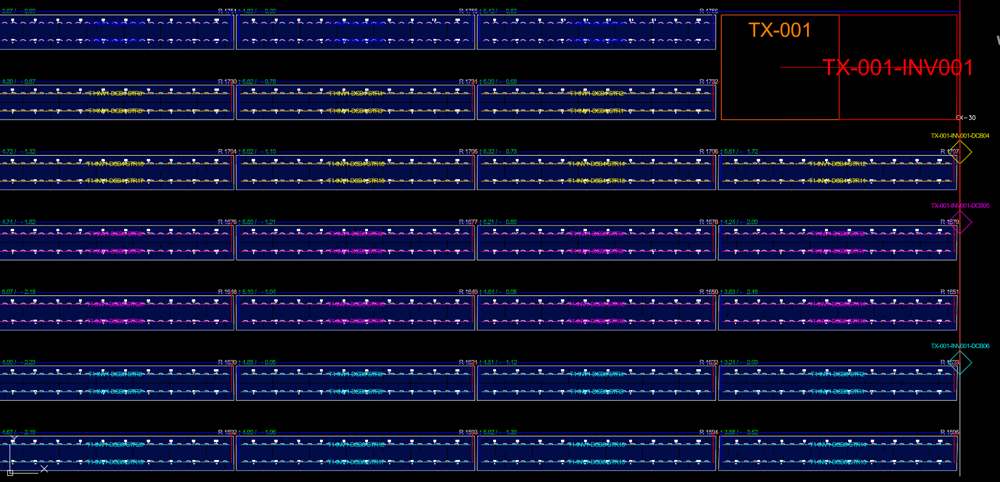

Case 02 · Electrical Design
String cable comparison in utility scale projects
Farklı kablolama senaryolarının uzunluk, kayıp ve saha uygulanabilirliği açısından değerlendirilmesi.

Problem Tanımı
Bu çalışmada string yönlendirme topolojisinin yalnızca toplam kablo metrajı değil, aynı zamanda gerilim düşümü, bakım erişimi ve saha montaj akışı üzerindeki etkileri incelenmiştir.
Proje Bağlamı
Analiz kapsamında line, leapfrog ve U-string alternatifleri aynı blok geometrisi için karşılaştırılmıştır. İnverter yerleşimi ve kanal geçiş noktaları sabit tutulmuştur.
Kullanılan Yöntem
Varsayımlar doğrultusunda her senaryo için metraj hesapları, dizi bazında gerilim düşümü kontrolü ve saha işçilik adımı değerlendirmesi yapılmıştır.
Teknik Analiz


Elde edilen bulgular senaryo bazında metraj farklarının tek başına karar için yeterli olmadığını, kanal geçiş yoğunluğu ve montaj sırasının da kritik olduğunu göstermektedir.
Bulgular
- Bazı bloklarda düşük metrajlı düzen, daha karmaşık montaj oluşturdu.
- Gerilim düşümü sınırına yakın diziler için topoloji etkisi arttı.
- İşçilik ve bakım erişimi kriterleri karar kalitesini yükseltti.
Sonuç
Teknik değerlendirme sonucunda kablolama kararının çok kriterli bir yaklaşımla ele alınması gerektiği doğrulanmıştır.
Teknik Çıkarımlar
Bu çalışma, elektriksel uyumluluk ile saha uygulanabilirliğinin aynı karar matrisi içinde değerlendirilmesinin proje güvenilirliğini artırdığını göstermiştir.